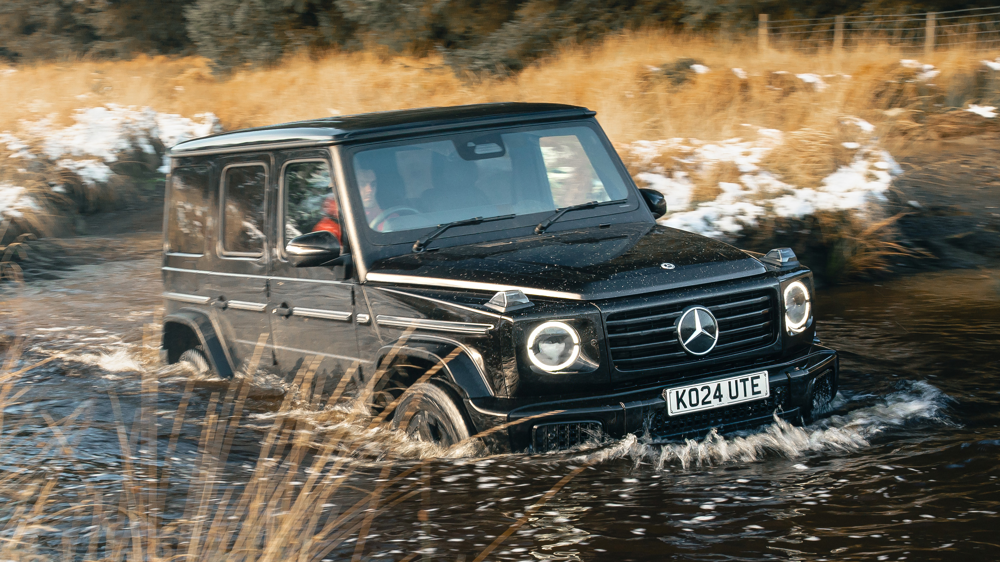

Mercedes Class-G
If you mean the Mercedes-Benz G-Class, it’s Mercedes-Benz’s iconic luxury off-road SUV, famous for its boxy shape, distinctive design, and strong off-road capability. Despite its rugged origins, modern G-Class models have a highly luxurious interior with premium materials, advanced technology, and a comfortable cabin. It also has a high driving position and a commanding road presence.


The G-Class combines serious off-road hardware with powerful engines and refined road manners, making it unusual among luxury SUVs. Higher-performance versions such as the AMG G 63 focus heavily on speed and performance, while the electric G 580 brings the classic design into the EV era. Overall, the G-Class is best known for its blend of iconic styling, luxury, performance, and exceptional off-road ability.